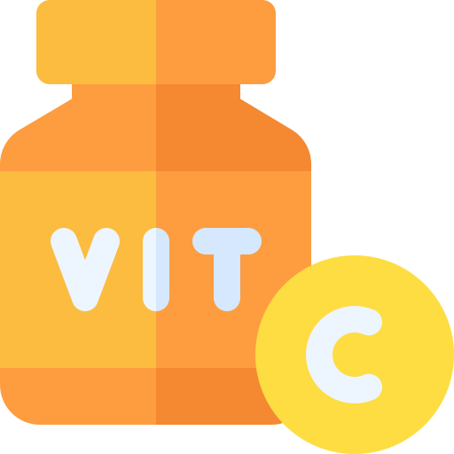
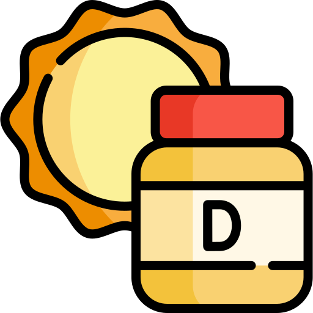
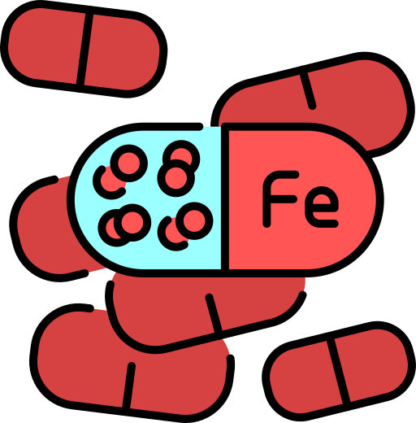

Vitamins and minerals are nutrients that your body needs in small amounts to stay healthy. Even though they don't give you energy like carbohydrates, protein or fats, they are still essential for keeping your body working properly.
Each vitamin and mineral has its own job. Some help strengthen your bones, others support your immune system, and some help your muscles, brain and nervous system function the way they should.
Eating a balanced diet with a variety of fruits, vegetables, dairy, whole grains and lean proteins can help you get the vitamins and minerals your body needs. Getting enough of these nutrients can improve your overall health, support exercise performance and help your body recover after physical activity.

Helps support your immune system, promotes wound healing, and protects your cells from damage.

Helps your body absorb calcium and keeps your bones and teeth strong and healthy.
Essential for strong bones and teeth while also helping muscles and nerves work properly.

Helps carry oxygen around the body and reduces tiredness by supporting healthy red blood cells.
Supports muscle function, nerve health, and helps your body produce energy.
Oranges (Vitamin C)
Kiwi Fruit (Vitamin C)
Strawberries (Vitamin C)
Spinach (Vitamin A, K, Folate)
Carrots (Vitamin A)
Broccoli (Vitamin C, K, Folate)
Milk (Calcium)
Greek Yogurt (Calcium)
Cheese (Calcium)
Almonds (Magnesium)
Pumpkin Seeds (Zinc, Magnesium)
Bananas (Potassium)